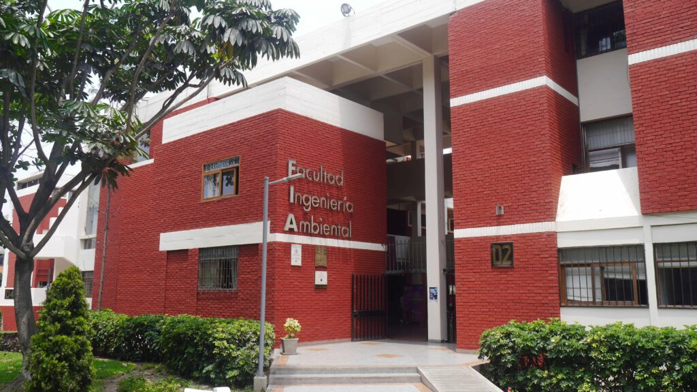

La Facultad de Ingeniería Ambiental de la Universidad Nacional de Ingeniería se dedica a la formación de profesionales de Ingeniería Sanitaria, Ingeniería de Higiene y Seguridad Industrial e Ingeniería Ambiental, contribuyendo sustancialmente con el desarrollo sostenible del país. Como complementación académica desarrolla actualmente las Maestrías en Ciencias en Ingeniería Ambiental con mención en: Seguridad Industrial e Higiene Ocupacional; Tratamiento de aguas y rehúso de desechos; Gestión Ambiental y la maestría de Especialización en Ergonomía. Los doctorados en Ciencias en Ingeniería Ambiental con mención en: Desarrollo sostenible; Abastecimiento de agua y Saneamiento; Seguridad Industrial y Salud en el Trabajo.
El Programa de Ingeniería Sanitaria de la Universidad Nacional de Ingeniería brinda una destacada experiencia en educación en ingeniería, para formar ingenieros sanitarios capaces de asegurar el suministro continuo de agua en un ambiente limpio y habitable para satisfacer las necesidades humanas y de la industria.
Los ingenieros sanitarios de la Universidad Nacional de Ingeniería demuestran una sólida competencia técnica en el diseño, operación y gestión de infraestructura de tratamiento y abastecimiento de agua, apuntando a la mejora continua y el bienestar de las personas y la sociedad.
Los Ingenieros Sanitarios pueden trabajar en los campos de saneamiento ambiental y servicios de salud pública, sistemas de abastecimiento de agua y alcantarillado, tratamiento y procesamiento de residuos de diferentes fuentes, y instalaciones sanitarias interiores para diferentes tipos de edificios. En todos estos campos el ingeniero sanitario propone y crea soluciones eficaces y las implementa con criterios de liderazgo y eficiencia.
El plan de estudios del Programa de Ingeniería Sanitaria está compuesto por 10 semestres académicos que abarcan con profundidad y amplitud las áreas de ciencias básicas, ciencias de la ingeniería, saneamiento ambiental, abastecimiento de agua y alcantarillado, tratamiento de aguas y residuos, e instalaciones sanitarias. La teoría y la práctica se integran en todo el plan de estudios, resolviendo diversos problemas de ingeniería y utilizando equipos y software especializados en laboratorios modernos.
El Programa de Ingeniería Sanitaria junto con el Programa de Ingeniería Ambiental y el Programa de Ingeniería en Higiene y Seguridad Industrial constituyen la Escuela de Ingeniería Ambiental que forma ingenieros profesionales que trabajan por el desarrollo de un ambiente limpio y saludable donde las personas y la industria vivan e interactúen de manera fructífera y relación sostenible a largo plazo.
El ingeniero de Higiene y Seguridad Industrial formado en la UNI, es un profesional
con sentido creador, emprendedor y líder, con sólidos conocimientos para seguir una línea de investigación
continua y superación personal.
Sus conocimientos de Ingeniería los aplica desarrollando: Gestión de la
prevención de riesgos en el medio laboral y en el entorno, debido a condiciones inadecuadas que rodean al
trabajador en su centro de trabajo, a la comunidad laboral que la integra y al propio centro de trabajo que
ponen en riesgo el bienestar y salud física y mental de los trabajadores.
Gestión de la prevención de
riesgos a
la salud ambiental, proyectos de planes y programas para la gestión de la seguridad, salud ocupacional y el
ambiente; acciones de prevención ante el riesgo de incendios; análisis de riesgos ambientales y análisis de los
aspectos de la ergonomía en el trabajo.
El Ingeniero de Higiene y Seguridad Industrial es el encargado de proteger al
trabajador en su centro de trabajo, a la comunidad laboral que él integra y al propio centro de trabajo, de
aquellas condiciones inadecuadas del ambiente que los rodean y que ponen en riesgo el bienestar y la salud
física y mental de los trabajadores.
Los campos de acción donde puede ejercer el ingeniero de higiene
son:
Orientado a las actividades de Dirección, Coordinación, Organización, Normalización, Diseño y
Control,
desarrolladas mediante programas de prevención de accidentes de trabajo y enfermedades ocupacionales, protección
contra incendios y otras emergencias, a ser desempeñadas en las Empresas Industriales, Comerciales, de Servicios
de Asesoría y en Institutos de Organismos Oficiales.
La carrera de Ingeniería Ambiental se centra en el estudio, diseño y aplicación de
soluciones para proteger y mejorar el medio ambiente. Los ingenieros ambientales trabajan en la identificación,
evaluación y gestión de los impactos ambientales provocados por actividades humanas, así como en el desarrollo
de tecnologías y políticas para mitigar estos efectos.
Esto implica la gestión sostenible de recursos como el agua, el suelo, la energía y los recursos biológicos.
Los ingenieros ambientales diseñan sistemas y tecnologías para reducir o prevenir
la contaminación del aire, agua y suelo.
También trabajan en la gestión de residuos sólidos y peligrosos.
Evalúan el impacto ambiental de proyectos industriales, de infraestructura o de desarrollo urbano, y proponen medidas para minimizar los efectos negativos.
Identifican y evalúan riesgos ambientales, como desastres naturales o accidentes industriales, y desarrollan planes de respuesta y recuperación.
Promueven el desarrollo de tecnologías y políticas que satisfagan las necesidades presentes sin comprometer la capacidad de las futuras generaciones para satisfacer las suyas.